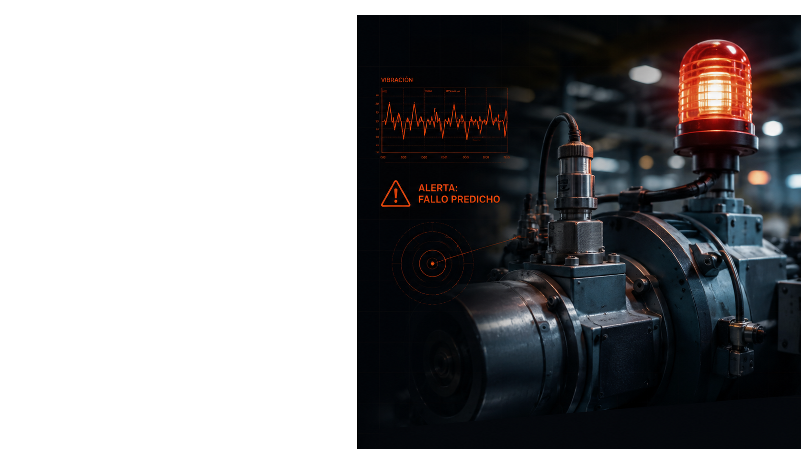
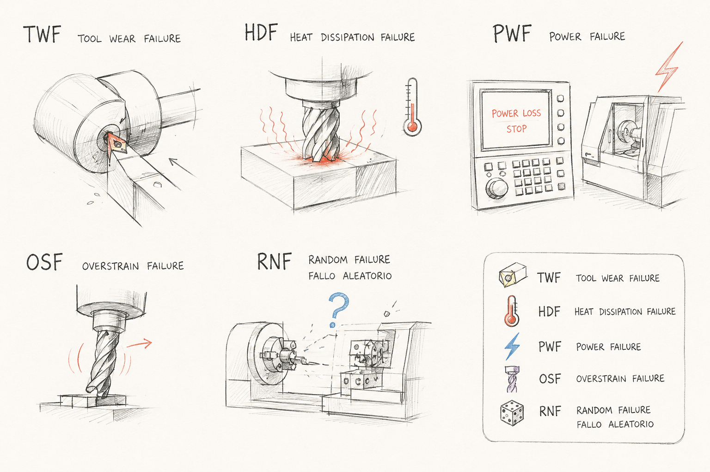

Mantenimiento predictivo: usar los sensores para avisar de una avería antes de que ocurra.
Una máquina industrial que se para sin avisar detiene toda la producción. Reparar de urgencia cuesta miles de euros por hora y nadie lo vio venir.
Se espera a que la máquina se rompa. La parada es total e inesperada.
Mantenimiento cada X horas, falle o no. Se gasta de más y aun así hay sorpresas.
Leer los sensores en tiempo real y avisar antes de que la máquina se pare.
Esto se llama mantenimiento predictivo: la máquina deja pistas en sus datos; nuestro objetivo es aprender a leerlas.
Cada conjunto de datos sigue el mismo recorrido, de los datos en bruto a un modelo que predice.
Conjunto principal. Limpio y didáctico. 10.000 máquinas simuladas.
Experimentos reales de corte de metal. Pequeño: 18 pruebas.
Sensores de una fresadora de 5 ejes a alta frecuencia.
Consumo eléctrico real de 11 máquinas durante un año.
10.000 registros de máquinas, cada uno con sus mediciones y una etiqueta: funcionó bien o falló. Es el conjunto con el que aprendemos el método.
| Lo que mide el sensor | En cristiano |
|---|---|
| Temperatura del aire / del proceso | Cómo de caliente está el entorno y la pieza |
| Velocidad de rotación (rpm) | Cómo de rápido gira la herramienta |
| Par motor (torque) | Cuánta fuerza de giro está haciendo |
| Desgaste de herramienta (min) | Cuánto tiempo lleva usándose la herramienta |
| Tipo de producto (L / M / H) | Calidad de la pieza: baja, media o alta |
Una máquina puede fallar por causas distintas. Cada una deja una huella propia en los sensores — y unas son mucho más frecuentes que otras.

img/ y aparecerá aquí.Solo 3 de cada 100 registros son un fallo. Suena bien… pero engaña a los modelos.
Un modelo "vago" que diga siempre "todo bien" acierta el 96,6 % de las veces… y no detecta ni un solo fallo.
Sin valores faltantes, sin duplicados, rangos coherentes. Podemos fiarnos de ellos.
La medida clave es el recall: de los fallos reales, cuántos detecta el modelo.
En vez de dejar que el modelo lo descubra todo solo, combinamos los sensores en señales más claras — igual que un mecánico experto sabe qué mirar.
Fuerza × velocidad de giro. Si se dispara o se cae, hay problema eléctrico.
Pieza menos aire. Si la máquina no disipa el calor, se recalienta.
Herramienta gastada haciendo mucha fuerza = sobreesfuerzo, señal típica de avería.
Cuánto se ha usado la herramienta respecto a su límite.
Probamos cinco "cerebros" diferentes, del más simple al más sofisticado, para ver cuál detecta mejor los fallos.
El más simple. Traza una línea entre "bien" y "fallo". Punto de partida.
Cientos de "árboles de decisión" votan juntos. Robusto y fiable.
Dibuja una frontera curva entre los dos grupos.
Árboles que aprenden de los errores del anterior. Muy potente con datos en tabla.
Misma idea que XGBoost pero más rápido. Pensado para datos desbalanceados.
| Modelo | Recall | Precisión | F1 | AUC |
|---|---|---|---|---|
| LightGBM ★ | 0,84 | 0,95 | 0,89 | 0,97 |
| XGBoost | 0,84 | 0,84 | 0,84 | 0,98 |
| Random Forest | 0,71 | 0,96 | 0,81 | 0,97 |
| SVM | 0,93 | 0,31 | 0,46 | 0,97 |
| Regresión Logística | 0,90 | 0,18 | 0,30 | 0,94 |
LightGBM es el mejor equilibrio: caza el 84 % de los fallos y casi todas sus alarmas son ciertas.
La Regresión Logística caza muchos (90 %) pero da demasiadas falsas alarmas — solo 18 de cada 100 son reales.
Cada dataset cubre un nivel distinto. La idea: empezar barato y amplio, y solo escalar al siguiente nivel si el anterior da la alarma — como un triaje.
El AI4I nos enseñó el camino. Lo aplicamos a datos del mundo real, cada uno con su propio reto.
Solo 18 experimentos de corte real. El reto es lo pequeño que es. Mejor modelo: F1 0,78.
Sensores a alta velocidad (500 lecturas/seg). Detecta vibración o sobrecarga. Mejor F1: 0,69.
Un año de datos sin etiquetas. El modelo aprende solo qué es "normal" y marca el 5 % más raro.
Sin respuestas marcadas de antemano, usamos otro enfoque: detectar lo que se sale de lo normal (detección de anomalías).
Tú pusiste las ideas, los datos y el criterio. Yo eché una mano de verdad en el editor: bucear en cuatro datasets, entrenar (y jubilar) modelos y perseguir bugs a tu lado a las tantas… y sí, también alineé unas cuantas rayas de colores. 🎨
Acepto el crédito encantada — y aquí sigo para el próximo git push.
Python · scikit-learn · LightGBM · XGBoost · pandas · matplotlib · seaborn